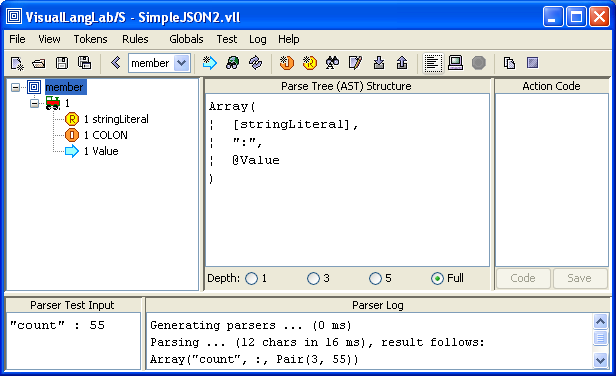
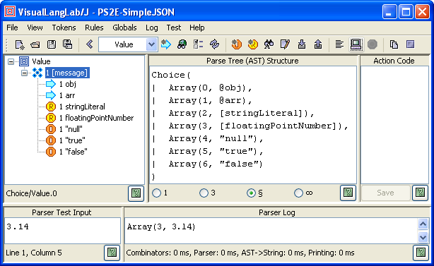
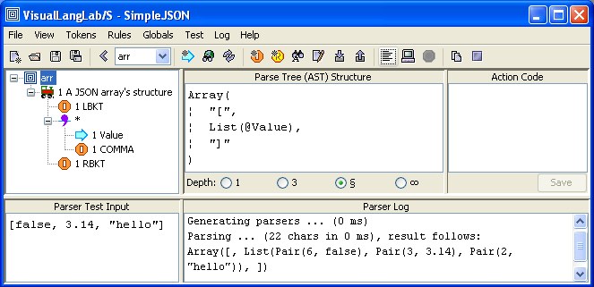
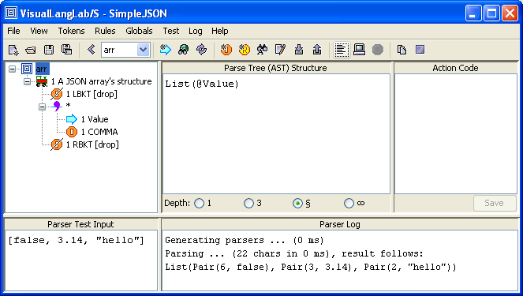

).
).
The terms parse-tree and AST (short for Abstract Syntax Tree) are used interchangably thoroughout the documentation to mean the same thing -- the structure of information gathered by a grammar-tree (or part of a grammar-tree) during the parsing process. This is how Wikipedia defines AST.
The discussion below explains two related issues: how VisualLangLab determines the structure of the AST for any grammar-tree, and how the user should design and program action-code to process an AST.
This version of VisualLangLab is written in Scala, so the AST is expressed in terms of standard Scala data-structures. While knowledge of Scala programming is not needed to develop a parser, a rudimentary understanding of data-structures is required for understanding the AST. For a formal introduction to Scala use any of the books featured on the official Scala web-site.
The following list contains all the Scala elements used in constructing ASTs. All items in the list are hyperlinked to detailed descriptions.
The AST of a complete grammar-tree is built up by recursively nesting these structures
as required by the grammar. That is why the content-type parameter
is always Any (to permit unconstrained nesting).
The examples in the following discussion illustrate this concept.
Scala function literals are used for adding action-code to grammar-tree nodes. However, this section does not provide instruction in writing Scala functions as use of action-code is an option and action-code can also be written in Javascript.
The structure of an AST for any particular grammar-tree is determined by the arrangement, type, and multiplicity of the nodes comprising the grammar-tree. Starting from the root-node, the following rules are applied recursively:
String (identical to the Literal itself)String (the lexeme or the matched input)Array[Any] containing the items contributed
by its child nodesPair[Int,Any] where the first member
is the (0-based) index of the matching alternative, and the second member
is the value contributed by the matched alternativeList[Any] containing all the matched itemsAdditionally, certain annotations cause the structure defined above to be modified in the following ways:
Option[Any].
A None is returned if the expected item was not found in the input,
and a Some[Any] is returned if the item was presentList[Any]. A Nil is returned if the multiplicity
is *, and no matching elements were found in the inputArray[Any], but just passes on the AST produced by its one contributing
child nodeThe examples below illustrate these principles using grammar trees from the built-in parser for SimpleJSON. Remember that the AST shown in the figures is the AST of the selected node. Also, remember that the root-node of a grammar-tree merely reflects the AST of the contained tree.
Figure-1 below illustrates the AST of a Sequence node. It also shows the result of testing the grammar-tree with some user-provided input.

The text displayed in the TextArea to the right of the grammar-tree is the structure
of the AST that will be used by VisualLangLab for this grammar-tree. Observe that the
structure is an Array with three elements (corresponding to the number of
child-nodes of the Sequence node). The format used for the array's elements is described
below:
The two TextAreas at the bottom of the GUI show the result of actually testing the parser. Some test input ("count" : 55) has been typed into the Parser Test Input area, and the result of running the parser appears under Parser Log. The AST actually generated is on the last line of the output (Array("count", :, Pair(3, 55))).
As described in Testing Parsers the displayed
grammar-tree is run by choosing Test -> Parse input from the main menu or
by clicking on the corresponding toolbar button
().
The grammar-tree in Figure-2 below illustrates the AST of a Choice node.

The displayed AST illustrates the format used to describe the AST of a Choice
node. The value actually returned by the parser is any one of the alternative
Pair[Int,Any]s shown. The first member of the Pair
is the index of the matching alternative, while the second member is the
value obtained by parsing the actual alternative.
The text in testing area show the result of a parser run. The text 3.14 was
typed into the Parser Test Input area, and the result of the run is the
output Pair(3, 3.14) (last line under Parser Log). The first
member of the Pair in this example (the value 3) is the 0-based
index of the matching alternative (the Regex node floatingPointNumber).
The grammar-tree in Figure-3 below illustrates the AST of a RepSep node.

Observe the the AST in this case is a 2-level structure -- a
List nested within an Array. The List
represents the RepSep, while the Array represents the
containing Sequence.
The parser when tested with the following input: [false, 3.14, "hello"] produces this AST as output: Array([, List(Pair(6, false), Pair(3, 3.14), Pair(2, "hello")), ]).
Our last example Figure-4 below illustrates the AST of a Sequence node with just 1 contributing node. It also shows the effect of applying the drop annotation to the child node of a Sequence.
This example uses the same grammar-tree as the previous example, but applies the drop annotation to the Literal nodes LBKT and RBKT (see Editing the Grammar Tree). The presence of the attribute is clearly evident in the grammar tree from the textual annotation as well as the overlay applied to the basic Literal icon.
The AST changes drastically beacuse of these modifications. The two dropped
nodes do not appear in the AST. And, since the Sequence has just one
child node left that contributes to the AST (the RepSep), the Sequence merely
passes on the AST of the RepSep. It does not need to produce an Array.
Within VisualLangLab action-code is an anonymous function literal in any supported programming language (see below). However, there are some general principles that apply irrespective of the language.
An action-code function literal must have one argument that can accept any value. The value returned by the function depends on the overall design of the parser.
An action-code function is called twice by the parser: once before parsing of the associated node begins, and again after parsing of the node has ended. The first invocation allows the action-code to perform any setup actions, while the second invocation is intended for AST processing. The action-code function can distinguish the two invocations by testing the value of its only argument. The argument has a null value during the first invocation, but holds a reference to the AST (which is necessarily non-null) during the second invocation. The action-code function must test the value of its argument and act accordingly.
Action-code to process a grammar-tree node's AST can be written in Scala or Javascript. The following sections explain action-code design in the two supported languages.
Action-code in Scala is written as a function-literal that accepts a single
argument of type Any and returns a value of any type (depending
on the overall design). The code can use all of the Scala and Java APIs.
The following code is an example taken from the
ArithExpr parser:
(a: Any) => a match {
// first invocation (do nothing) ...
case null => null
// second invocation (process AST) ...
case Array(f: Double, lst:List[_]) =>
var res = f
lst.foreach(_ match {
case Pair(0, f2:Double) => res *= f2
case Pair(1, f2:Double) => res /= f2
})
res
}
Scala action-code can use a predefined global object named VLL to store
collected information. It exists from start to end of the parser run.
This object behaves as if it has a data member called value
defined like this: var value: Any = _, so action-code can
store any value like this: VLL.value = /*some value*/, and
recover the value later by using
VLL.value.asInstanceOf[/*some type*/].
Under the hood, any user-provided Scala code must be actually compiled before use, so the presence of action-code in Scala does perceptibly slow down the VisualLangLab GUI at certain points.
Action-code in Javascript is written as an anonymous function that accepts one argument and returns a value that depends on the overall design. The code is interpreted by the JVM's embedded Javascript engine (Rhino), and can therefore use the JDK API. The following code is an example taken from the ArithExpr parser:
function (arg) {
// first invocation (do nothing) ...
if (!arg) {
return;
}
// second invocation (process AST) ...
switch (arg[0]) {
case 0:
return parseFloat(arg[1]); break;
case 1:
return arg[1]; break;
}
}
Javascript action-code can use a predefined global object named VLL to store collected information. It exists from start to end of the parser run. This object has no particular data or function members, but can be modified by the action-code as required.